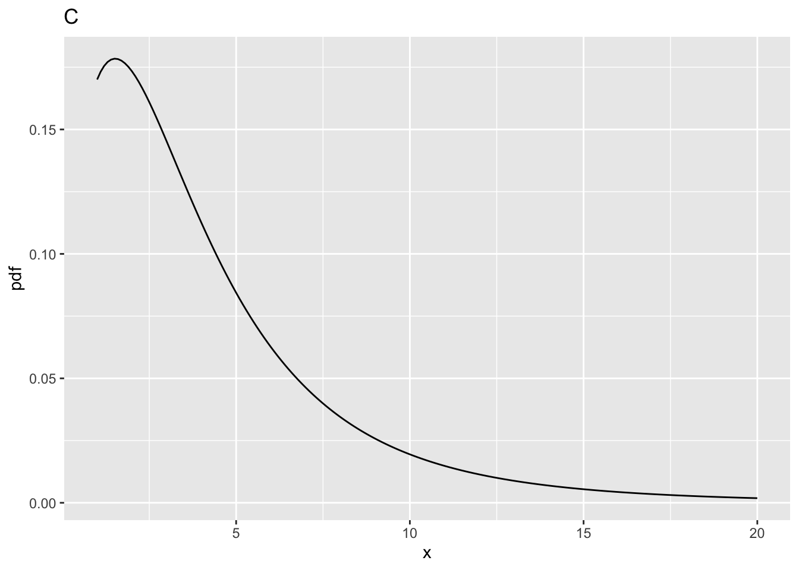
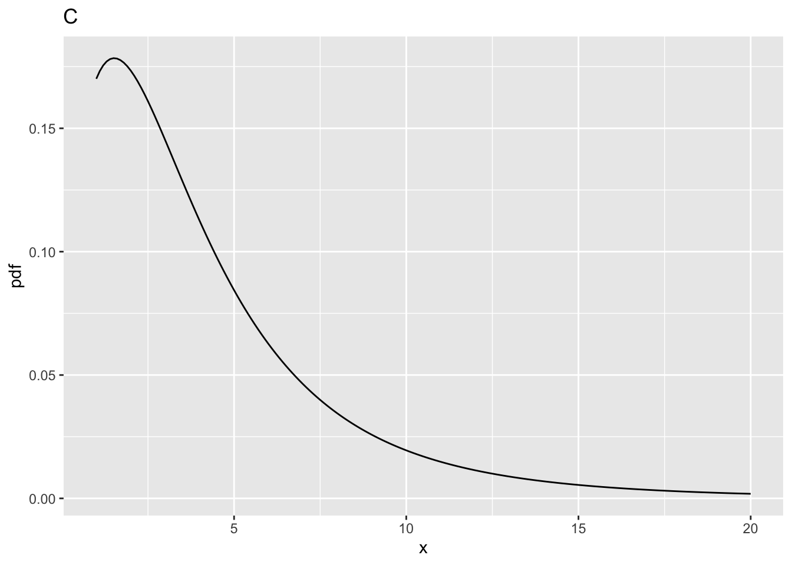
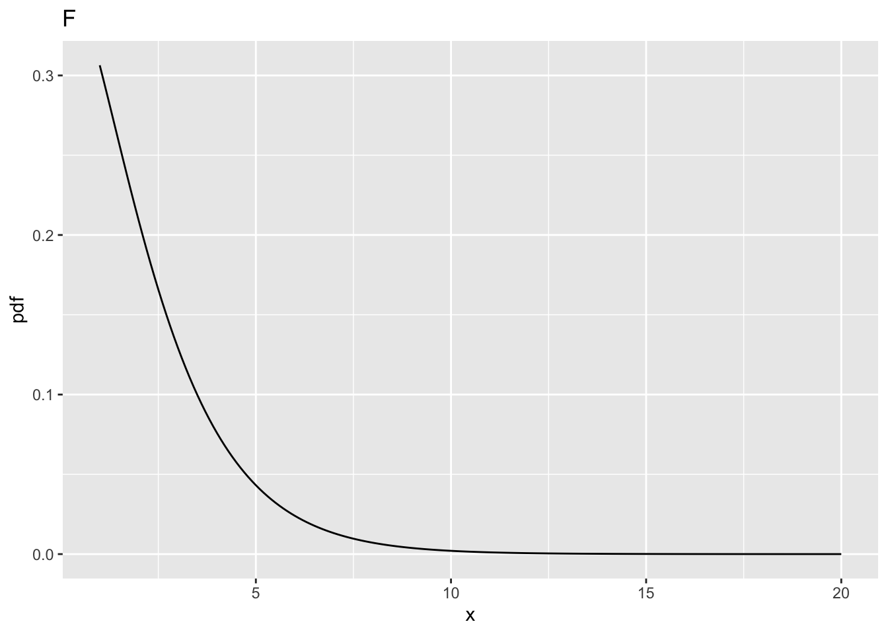
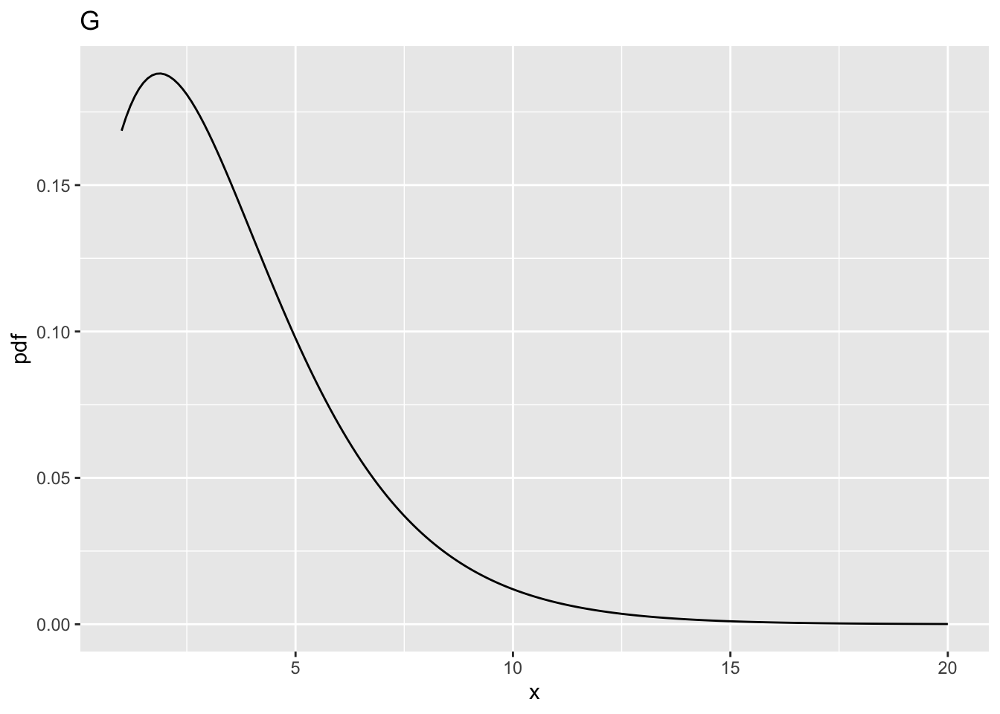
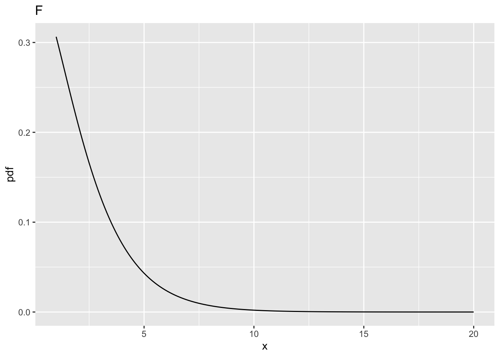
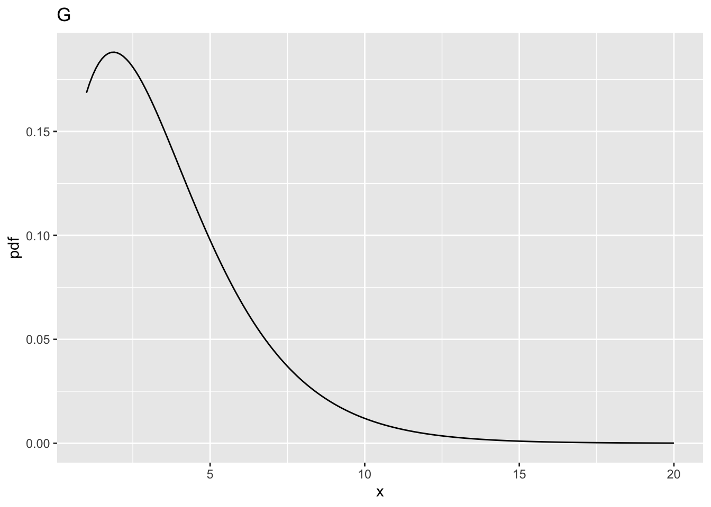
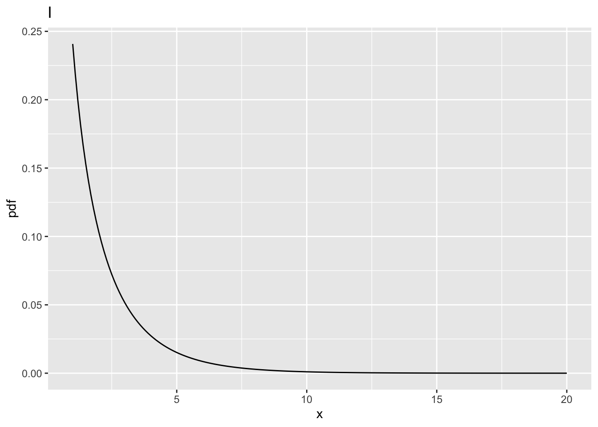
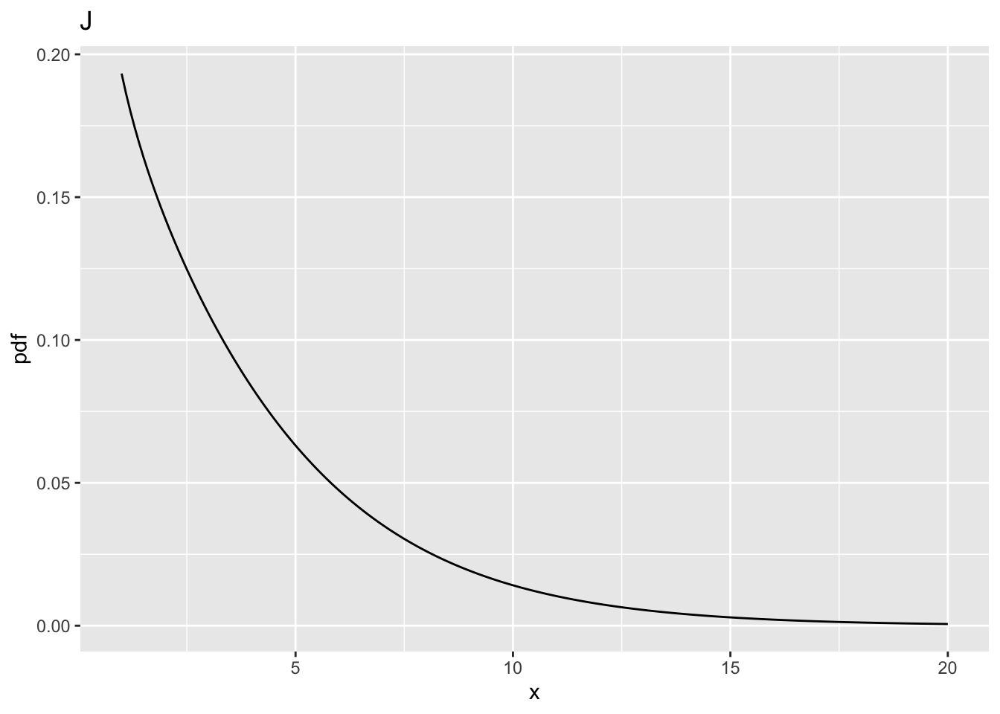
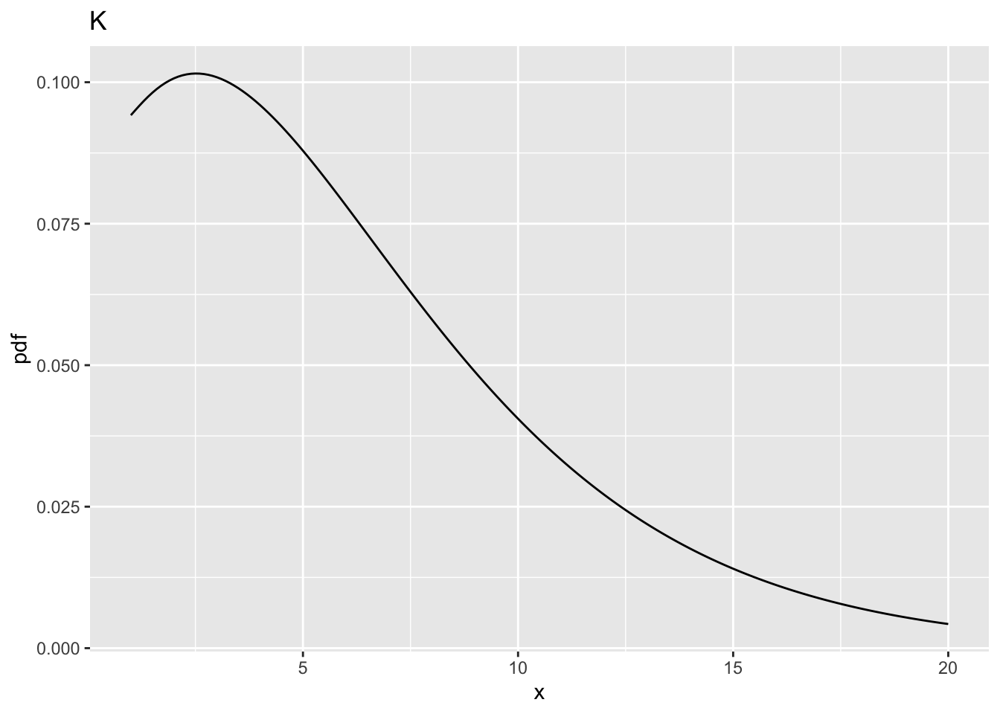

Chapter 10 F-distribution
10.2 Introduction
Since it plays an important role in sample size estimation, it is helpful to examine the behavior of the F-distribution. In the following ndf = numerator degrees of freedom, ddf = denominator degrees of freedom and ncp = non-centrality parameter (i.e., the \(\Delta\) appearing in Eqn. (11.6) of (Chakraborty 2017)).
The use of three R functions is demonstrated.
qf(p,ndf,ddf)is the quantile function of the F-distribution for specified values ofp,ndfandddf, i.e., the valuexsuch that fractionpof the area under the F-distribution lies to the right ofx. Sincencpis not included as a parameter, the default value, i.e., zero, is used. This is called the central F-distribution.df(x,ndf,ddf,ncp)is the probability density function (pdf) of the F-distribution, as a function ofx, for specified values ofndf,ddfandncp.pf(x,ndf,ddf,ncp)is the probability (or cumulative) distribution function of the F-distribution for specified values ofndf,ddfandncp.
10.3 Effect of ncp for ndf = 2 and ddf = 10
- Four values of
ncpare considered (0, 2, 5, 10) forddf= 10. fCritis the critical value of the F distribution, i.e., that value such that fraction \(\alpha\) of the area is to the right of the critical value, i.e.,fCritis identical in statistical notation to \({{F}_{1-\alpha ,ndf,ddf}}\).
ndf <- 2;ddf <- 10;ncp <- c(0,2,5,10)
alpha <- 0.05
fCrit <- qf(1-alpha, ndf,ddf)
x <- seq(1, 20, 0.1)
myLabel <- c("A", "B", "C", "D")
myLabelIndx <- 1
pFgtFCrit <- NULL
for (i in 1:length(ncp))
{
y <- df(x,ndf,ddf,ncp=ncp[i])
pFgtFCrit <- c(pFgtFCrit, 1-pf(fCrit, ndf, ddf, ncp = ncp[i]))
}
for (i in 1:length(ncp))
{
y <- df(x,ndf,ddf,ncp=ncp[i])
curveData <- data.frame(x = x, pdf = y)
curvePlot <- ggplot(data = curveData, mapping = aes(x = x, y = pdf)) +
geom_line() +
ggtitle(myLabel[myLabelIndx]);myLabelIndx <- myLabelIndx + 1
print(curvePlot)
}
fCrit_2_10 <- fCrit # convention fCrit_ndf_ddf
 

| ndf | ddf | fCrit | ncp | pFgtFCrit | |
|---|---|---|---|---|---|
| A | 2 | 10 | 4.102821 | 0 | 0.0500000 |
| B | 2 | 10 | 4.102821 | 2 | 0.1775840 |
| C | 2 | 10 | 4.102821 | 5 | 0.3876841 |
| D | 2 | 10 | 4.102821 | 10 | 0.6769776 |
10.5 Effect of ncp for ndf = 2 and ddf = 100
 

| ndf | ddf | fCrit | ncp | pFgtFCrit | |
|---|---|---|---|---|---|
| A | 2 | 10 | 4.102821 | 0 | 0.0500000 |
| B | 2 | 10 | 4.102821 | 2 | 0.1775840 |
| C | 2 | 10 | 4.102821 | 5 | 0.3876841 |
| D | 2 | 10 | 4.102821 | 10 | 0.6769776 |
| E | 2 | 100 | 3.087296 | 0 | 0.0500000 |
| F | 2 | 100 | 3.087296 | 2 | 0.2199264 |
| G | 2 | 100 | 3.087296 | 5 | 0.4910802 |
| H | 2 | 100 | 3.087296 | 10 | 0.8029764 |
10.6 Comments
- All comparisons in this sections are at the same values of
ncpdefined above. - And between
ddf= 100 andddf= 10.
10.6.1 Fig. E
- This corresponds to
ncp= 0,ndf= 2 andddf= 100. - The critical value is
fCrit_2_100= 3.0872959. Notice the decrease compared to the previous value forncp= 0, i.e., 4.102821, forddf= 10. - One expects that increasing
ddfwill make it more likely that the NH will be rejected, and this is confirmed below. - All else equal, statistical power increases with increasing
ddf.
10.6.2 Fig. F
- This corresponds to
ncp= 2,ndf= 2 andddf= 100. - The probability of exceeding the critical value is
prob > fCrit_2_100= 0.2199264, greater than the previous value, i.e., 0.177584 forddf= 10.
10.7 Effect of ncp for ndf = 1, ddf = 100

| ndf | ddf | fCrit | ncp | pFgtFCrit | |
|---|---|---|---|---|---|
| A | 2 | 10 | 4.102821 | 0 | 0.0500000 |
| B | 2 | 10 | 4.102821 | 2 | 0.1775840 |
| C | 2 | 10 | 4.102821 | 5 | 0.3876841 |
| D | 2 | 10 | 4.102821 | 10 | 0.6769776 |
| E | 2 | 100 | 3.087296 | 0 | 0.0500000 |
| F | 2 | 100 | 3.087296 | 2 | 0.2199264 |
| G | 2 | 100 | 3.087296 | 5 | 0.4910802 |
| H | 2 | 100 | 3.087296 | 10 | 0.8029764 |
| I | 1 | 100 | 3.936143 | 0 | 0.0500000 |
| J | 1 | 100 | 3.936143 | 2 | 0.2883607 |
| K | 1 | 100 | 3.936143 | 5 | 0.6004962 |
| L | 1 | 100 | 3.936143 | 10 | 0.8793619 |
10.8 Comments
- All comparisons in this sections are at the same values of
ncpdefined above and atddf= 100. - And between
ndf= 1 andndf= 2.
10.8.1 Fig. I
- This corresponds to
ncp= 0,ndf= 1 andddf= 100. - The critical value is
fCrit_1_100= 3.936143. - Notice the increase in the critical value as compared to the corresponding value for
ndf = 2, i.e., 3.0872959. - One expects power to decrease: the following code demonstrates that as
ndfincreases, the critical valuefCritdecreases. - In significance testing generally
ndf= I -1. - It more likely that the NH will be rejected with increasing numbers of treatments.
| ndf | ddf | fCrit |
|---|---|---|
| 1 | 100 | 3.936143 |
| 2 | 100 | 3.087296 |
| 5 | 100 | 2.305318 |
| 10 | 100 | 1.926692 |
| 12 | 100 | 1.850255 |
| 15 | 100 | 1.767530 |
| 20 | 100 | 1.676434 |
10.8.2 Fig. J
- This corresponds to
ncp= 2,ndf= 1 andddf= 100. - Now
prob > fCrit_1_100= 0.2883607, 0.1351602, 0.0168844, 8.999211410^{-4}, 3.258475710^{-4}, 8.161980710^{-5}, 1.108413210^{-5}, larger than the previous value 0.2199264. - The power has actually increased.
10.9 Summary
- Power increases with increasing
ddfandncp. - The effect of increasing
ncpis quite dramatic. This is because power depends on the square ofncp. - As
ndfincreases,fCritdecreases, which makes it more likely that the NH will be rejected. - With increasing numbers of treatments the probability is greater that the F-statistic will be large enough to exceed the critical value.
REFERENCES
Chakraborty, Dev P. 2017. Observer Performance Methods for Diagnostic Imaging: Foundations, Modeling, and Applications with R-Based Examples. Boca Raton, FL: CRC Press.
10.4 Comments
10.4.1 Fig. A
ncp = 0, i.e., the central F-distribution.fCritin the above code block, is the value ofxsuch that the probability of exceedingxis \(\alpha\). The corresponding parameteralphais defined above as 0.05.fCrit= 4.102821. Notice the use of the quantile functionqf()to determine this value, and the default value ofncp, namely zero, is used; specifically, one does not pass a 4th argument toqf().fCrit. As expected,prob > fCrit= 0.05 because this is howfCritwas defined.10.4.2 Fig. B
ncp = 2,ndf= 2 andddf= 10.prob > fCrit= 0.177584, i.e., the statistical power (compare this to Fig. A whereprob > fCritwas 0.05).10.4.3 Fig. C
ncp = 5,ndf= 2 andddf= 10.prob > fCrit= 0.3876841.10.4.4 Fig. D
ncp = 10,ndf= 2 andddf= 10.prob > fCritis 0.6769776.x= 4.102821, fraction 0.6769776 of the probability distribution in Fig. D lies to the right of this line10.4.5 Summary
The larger that non-centrality parameter, the greater the shift to the right of the F-distribution, and the greater the statistical power.